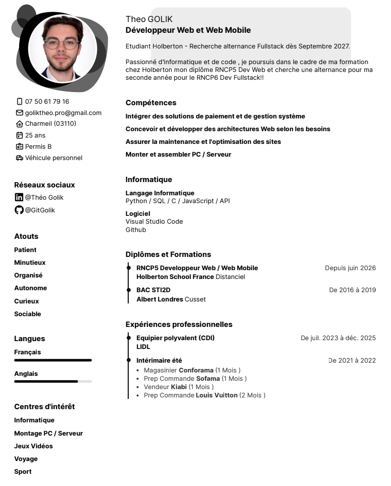

Qui suis-je ?
Golik Théo , développeur FullStack en devenir.
Actuellement en Formation je cherche un stage pour mon RNCP 5 et une alternance pour mon RNCP 6
Mon Parcours
Passionné d'information depuis petit , j'ai pris goût a l'envie d'apprendre à code , pour imaginer et développer les choses dont j'ai besoin et/ou envie J'ai donc commener une formation développeur Web chez Holberton et suis devenue plus que passionée par le code. je cherche à aproffondir mes connaissances sur le terrain par le biais d'un stage pour mon RNCP 5 (BAC+2), puis une alternance pour mon RNCP 6 (BAC+4).
Ressources
Vous trouverez ci-dessous mon CV visible ou en téléchargeable sur ce lien : GOLIK-CV
